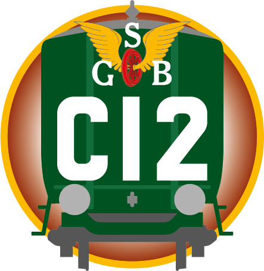

Stroomtrein Goes-Borsele

Openingstijden
- ma 9:00-15:00
- di 9:00-15:00
- wo 9:00-15:00
- za 11:00-17:00
- zo 11:00-17:00
Entreeprijzen
- Dagticket
- 0-3 jaar - gratis entree
- 4-18 jaar - 15,00
- volwassenen - 20,00
- Middagticket
- 0-3 jaar - gratis entree
- 4-18 jaar - 10,00
- volwassenen - 15,00
Je reist per historische motorwagen ‘anno 1927’ van Goes naar Hoedekenskerke, waar een heerlijke maaltijd gereed staat.
De diners variëren per dag.